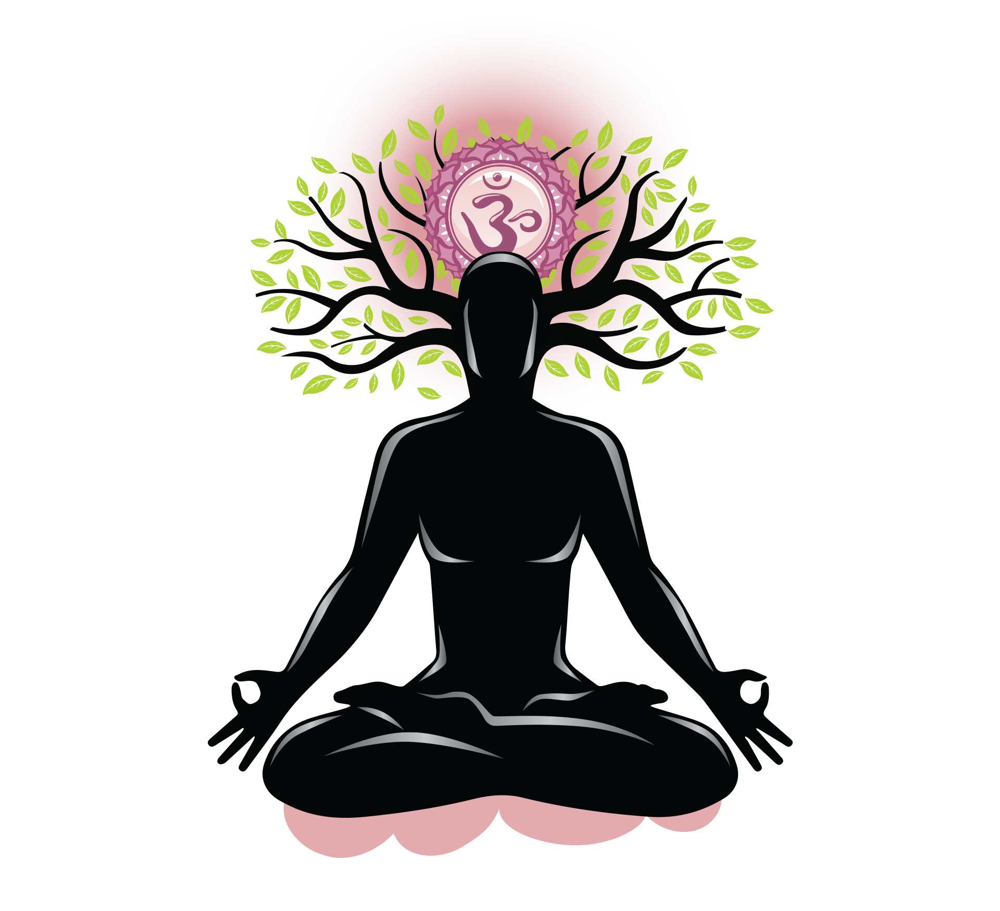
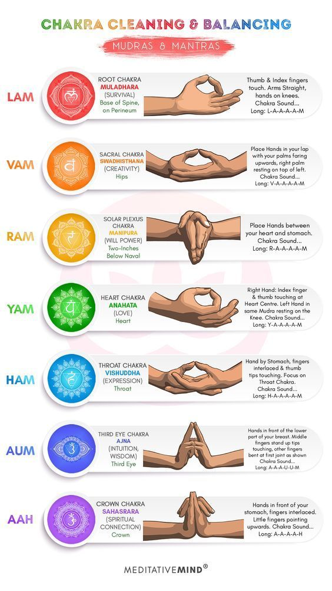
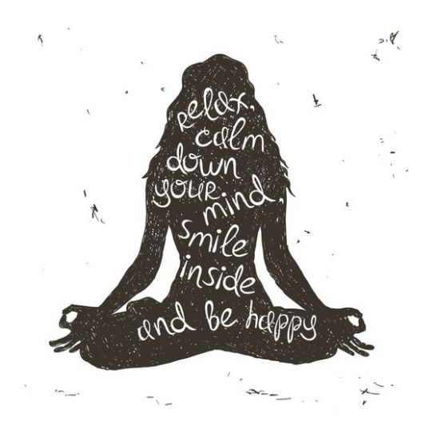

Meditation is a set of mental techniques that help train your attention and awarenss.
It often involves concentrating on your breathing or a specific phrase, object, or idea to create a calm, focused, and relaxed mental state.
Today, many people use meditation for non-religious purposes, such as stress management, improved focus, mood enhancement, and mental clarity
Types of Meditation:

Focused (Concentrative) Meditation:
Involves focusing one of your five senses on a specific sensation or object.
Examples include listening to a chime, staring at a candle, focusing on your breath, or counting prayer beads.
When your mind wanders, you bring it back to focus on your chosen object or sensation.
Mindfulness Meditation:
Involves becoming aware of your thoughts, feelings, and sensations without judgment or distraction.
It helps develop present-moment awareness and acceptance of difficult emotions
Getting Started with Meditation:

Find a Quiet Space:
Choose a distraction-free area without phones or TVs.
Sit comfortably on a cushion or chair with an upright posture.
Relax Your Hands:
Let your hands rest naturally, either in your lap or in a mudra position (thumb and pointer finger pressed together).
Tilt your chin downward and close your eyes.
Set a Timer:
Start with a short session (3-5 minutes) and gradually increase the duration.
Focus on your breathing throughout.
Focus on Your Breath:
Breathe deeply from your belly.
Concentrate on inhales and exhales.
If your mind wanders, gently bring it back to your breath.
Heatlh Benefits:

Reduces Stress:
Meditation is well-known for stress reduction. It helps lower cortisol levels, the stress hormone, and reduces inflammation caused by stress.
It can also alleviate symptoms in conditions like irritable bowel syndrome, post-traumatic stress disorder, and fibromyalgia.
Controls Anxiety:
A meta-analysis found that meditation decreases anxiety, especially in those with high anxiety levels.
Mindfulness meditation helps reduce anxiety symptoms and improves coping mechanisms .
Yoga, which combines meditation and physical activity, also contributes to anxiety reduction
Enhances Emotional Health:
Meditation fosters self-awareness, gratitude, and a positive outlook.
It can improve emotional well-being and inner peace.
Boosts Focus and Concentration:
Regular meditation enhances attention and cognitive skills.
It helps you stay centered and maintain inner peace even beyond your meditation session